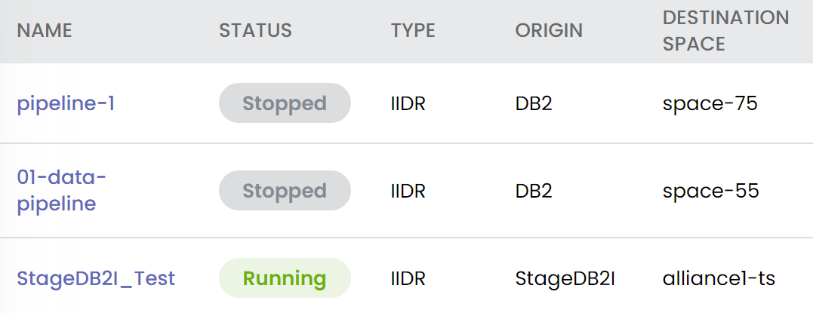
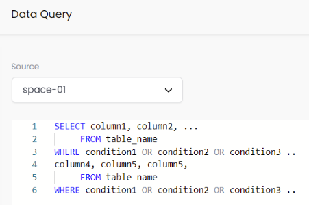

SpaceDeck is an intuitive, streamlined user interface to define the tools to bring legacy System of Record (SoR) databases into the in-memory data grid that is the core of the GigaSpaces DIH system.
SpaceDeck has the following features:
No-code functionality – the environment can be set up and monitored using the user-friendly SpaceDeck screens, without the necessity of writing or customizing code.
Crystal-clear, step-by-step instructions for defining and running the online environment
A full complement of data and system monitoring tools, built into the environment
This introductory version of SpaceDeck does not cover all functionality and is intended as an introduction to the new UI and a supplement to our existing
If you are running applications that require access to heterogeneous data that is spread across various Systems of Record – you need to gather that data into a unified data model that is not dependent on any particular database or operating system,
And if you want to make that data instantly accessible – including querying and updating – in a proven in-memory data grid that is scalable, automatically backed up, designed for the Kubernetes environment, and has easy access to microservices, then you need
And if you want to design and manage that data using a no-code, elegant, beyond state-of-the-art user interface, then you need SpaceDeck.
Using SpaceDeck, you can define the following items:
Data Source – the database in the System of Record that will be used as a source and target of data for the Data Pipeline
Data Pipeline – the mechanism to transfer data to and from selected tables in the Data Source to selected Space objects in the GigaSpace in-memory data grid
SpaceDeck also provide monitoring and query screens to view the system status:
After you have installed the
Define the Data Sources from the System of Record
| 1. Define the Data Sources from the System or Record | 2. Define a Data Pipeline | 3. Monitor the activity of the Data Pipeline | 4. Perform SQL queries on Space/Pipeline data |
|---|---|---|---|
| Specify URLs for the SoR databases in SpaceDeck – |
Specify which Data Source feeds the Data Pipeline, and which in-memory Space will contain the data – |
View dynamic metrics and start/stop the pipeline – |
Use supported SQL-99 commands – |
|
|
|
 |  |
This topic includes the following sections: